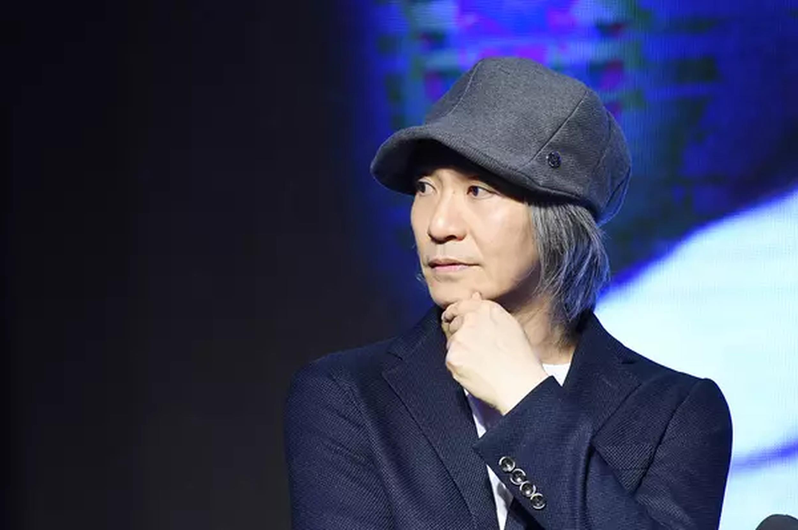
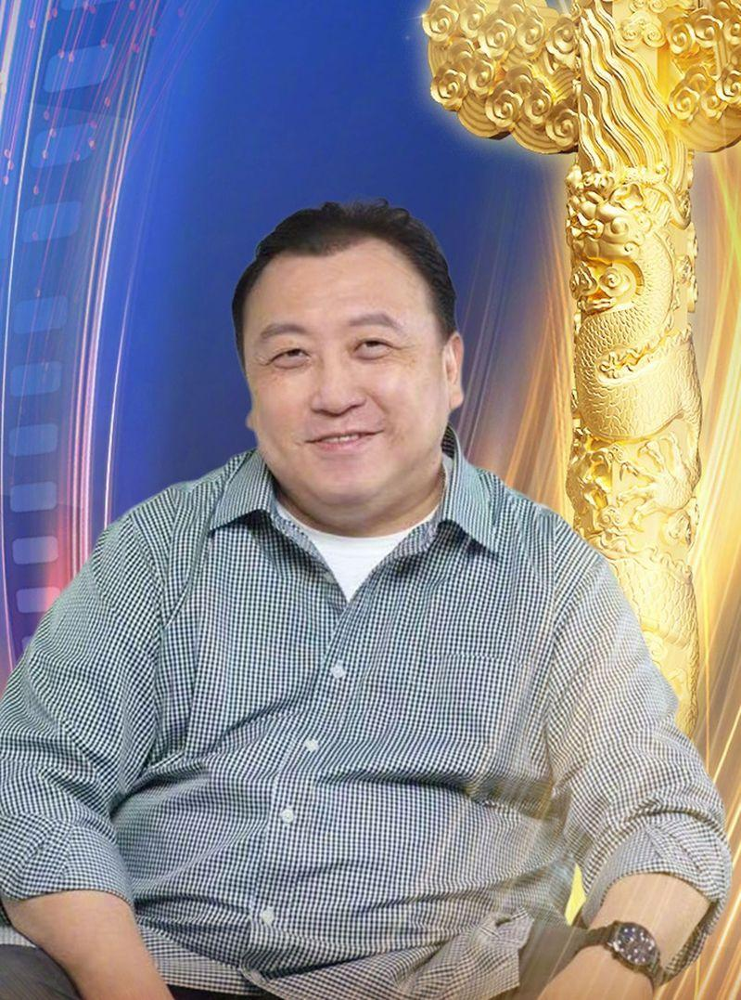

香港知名导演王晶近日开设YouTube频道「王晶笑看江湖」，第一集大爆料周星驰（星爷）的黑史，节目才上架首集就引发热议，第二集他继续爆料，批评周星驰比起朋友更重视金钱，不过，王晶并非一面倒批评星爷，也有赞赏对方。
王晶第一集爆料周星驰割过双眼皮，还指出拍摄「鹿鼎记II神龙教」时，两人的友情开始变质，因为周星驰想当导演，不甘再受人指挥，对王晶的态度也开始变差。

近日该节目播出第二集，王晶指两人正式决裂是在拍「千王之王2000」时，周星驰态度不好不肯配合张家辉。王晶还指出「少年李小龙」周星驰要求800万（约101.6万美元）片酬，分帐时周星驰不断提高要求，本来说好与王晶六四分，后来又变成七三、八二分。
然而，王晶指出周星驰最后又反悔，没有接演「少年李小龙」，改接了「武状元苏乞儿」，他形容周星驰：「他将钱与朋友分得很清楚。」王晶指周星驰曾与吴孟达在天津做生意，结果亏本，之后两人关系变差。王晶目睹周星驰从普通人变成明星，自认把周星驰性格看得很透，「他做什么我都看得很清楚，只不过当时没必要说出来。」
尽管二人拍「千王之王2000」决裂，无法再做朋友，但王晶不讳言对星爷的演戏和执导实力其实很尊重，「金像奖只得过一次「最佳男主角」，我觉得最少应该拿奖三至四次，最佳导演都应该拿两次。」